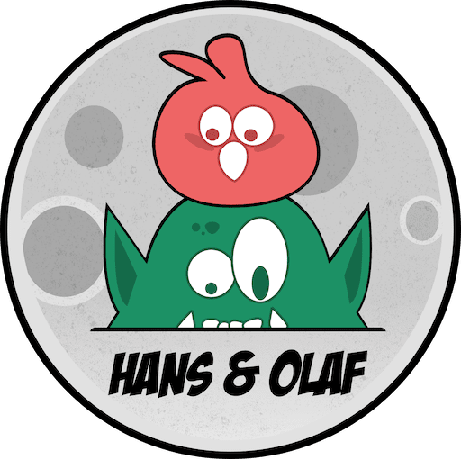

Magical Tales
Into The Wild #36
Spiritual Nomad Records
NEW
Tales of Zahrah #23
Orientaldeep
Days podcast #23
Rituel Recordings
Furious battles
Opening Nina Kraviz
@ Unlimited Folie
Introduction
@ Château de Manou
Dark matter
Opening Jennifer Cardini
@ Unlimited Festival
Progressive Rhythms
Opening Township Rebellion
@ Jardins Sonores